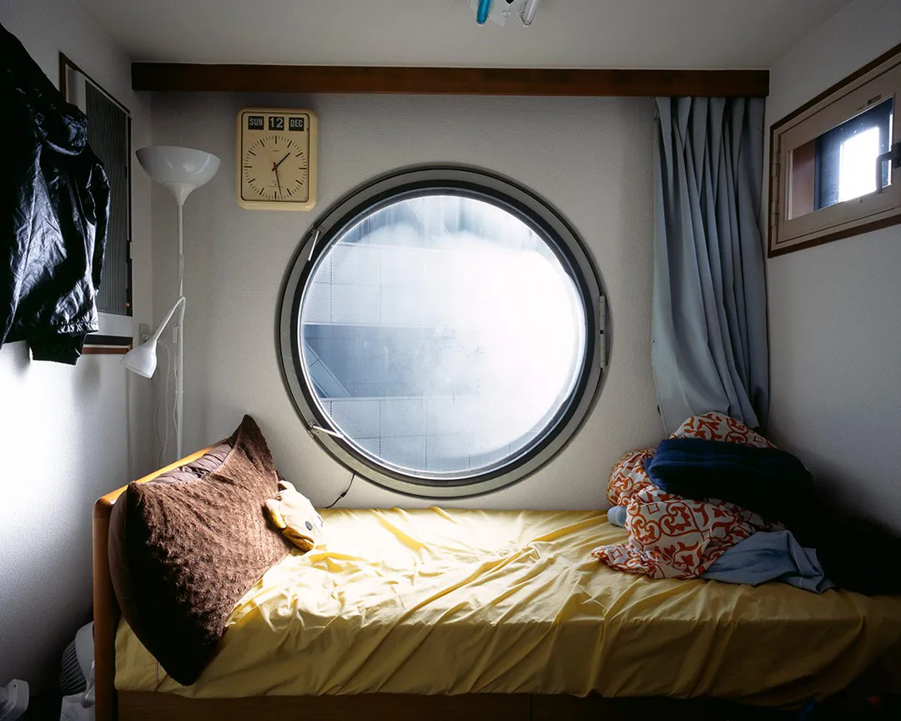
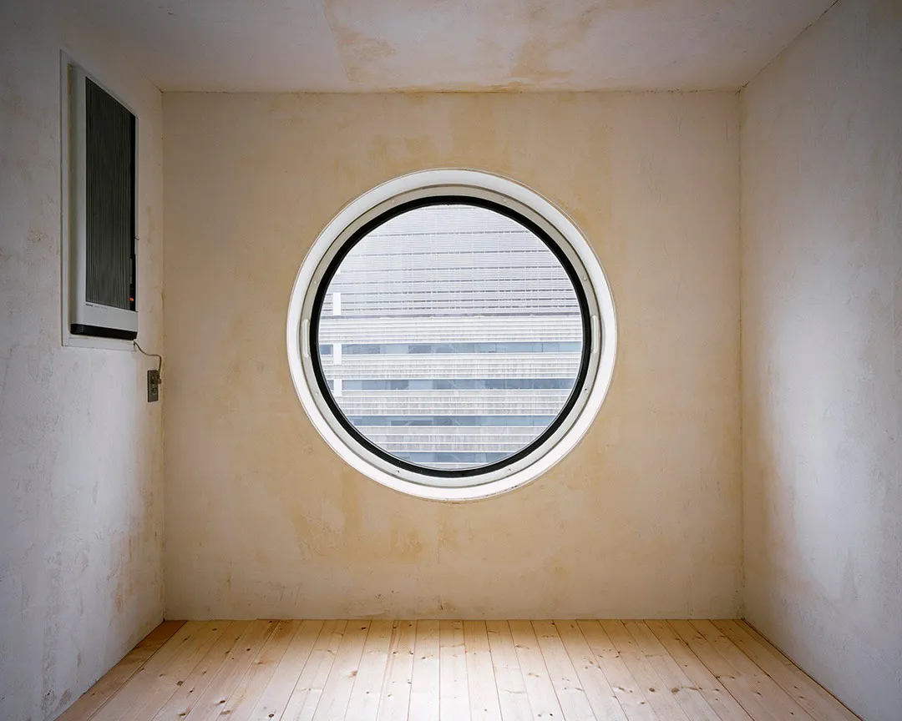

History
1960 — Launch of Metabolist Movement
The Metabolist movement was launched in 1960 by architects and designers including Kurokawa, Kiyonori Kikutake, Masato Otaka, Fumihiko Maki, Noboru Kawazoe, Kenji Ekuan, and Kiyoshi Awazu, with the publication of Metabolism: the Proposals for New Urbanism at the World Design Conference in Tokyo. The group advocated for megastructures, many of which were not realized due to the energy crises and environmental changes of the 1970s.

1970 — Expo ’70 Capsule Experiments
Kurokawa explored modular capsule architecture with the Takara Beautilion at Expo ’70 in Osaka, using a steel-tube frame supporting stainless-steel-clad cubic capsules. He also designed a suspended capsule house in the Symbol Zone. Impressed by the Beautilion, Torizo Watanabe commissioned Kurokawa to design a permanent capsule building for Nakagin.

1970–1972 — Construction of the Nakagin Capsule Tower
Construction took place both onsite in Ginza and off-site 450 km away. Towers containing infrastructure were built onsite, while the capsules were factory-assembled and delivered daily. Five to eight capsules were attached per day. The building primarily served visiting businessmen, with capsule units costing up to US$14,600 (≈ $109,700 today).
2006–2022 — Update Proposals & Demolition Decision
Although capsules could be individually replaced, the cost reached ¥6.2 million per capsule by 2006. Owners voted for demolition due to deterioration, asbestos concerns, and cramped conditions. Kurokawa proposed updating capsules, but safety and economic issues prevailed. Preservation attempts continued through the 2010s, but redevelopment efforts repeatedly failed.

2022 — Demolition & Digital Archiving
Demolition began on 12 April 2022. Recognizing its historical importance, a digital archive project scanned the entire building using laser measurements and over 20,000 photographs, creating an augmented reality reconstruction of the Nakagin Capsule Tower.

Since 2022 — Preservation of Capsules
Twenty-three capsules were preserved. Sixteen have new destinations: two are on permanent display by Shochiku, and five will be placed along the coast of Kanagawa Prefecture. Capsule A1302 was saved by the San Francisco Museum of Modern Art.
